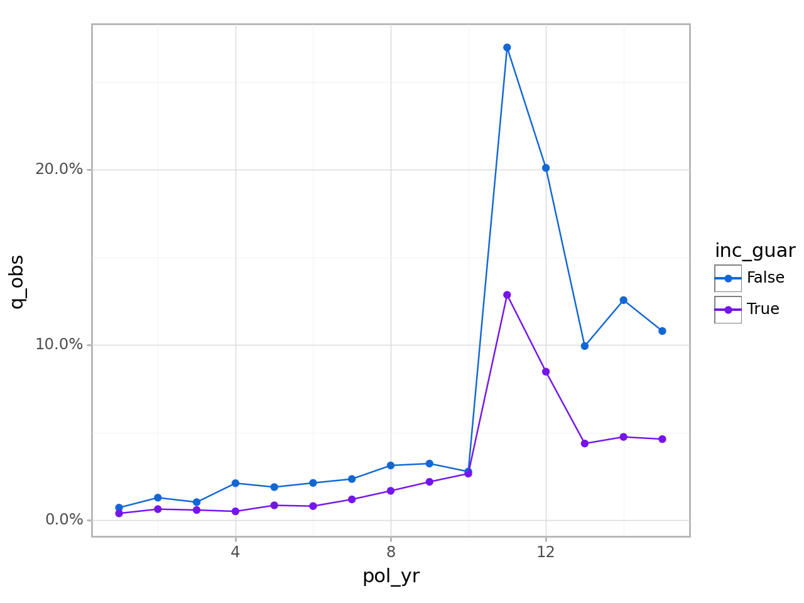
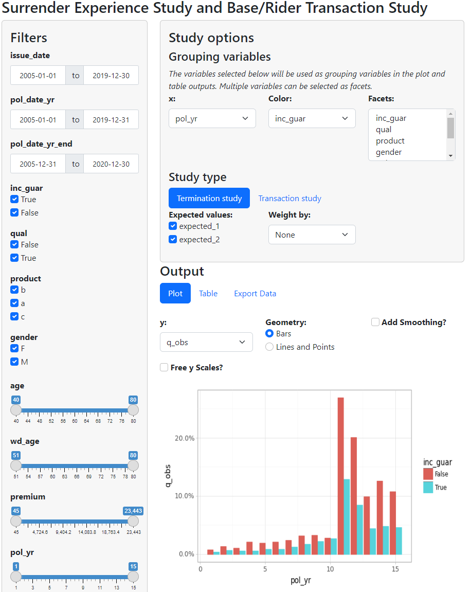

actxps
actxps
The actxps package provides a set of tools to assist with the creation of actuarial experience studies. Experience studies are used by actuaries to explore historical experience across blocks of business and to inform assumption setting for projection models.
- The
ExposedDFclass converts census-level records into policy or calendar year exposure records. - The
exp_stats()method ofExposedDFcreatesExpStatsexperience summary objects containing observed termination rates and claims. Optionally, expected termination rates, actual-to-expected ratios, and limited fluctuation credibility estimates can also be returned. - The
add_transactions()method attaches summarized transactions to anExposedDFobject. - The
trx_stats()method ofExposedDFcreatesTrxStatstransaction summary objects containing transaction counts, amounts, frequencies, and utilization. Optionally, transaction amounts can be expressed as a percentage of one or more variables to calculate rates or actual-to-expected ratios. - The
plot()andtable()methods ofExpStatsandTrxStatscreate plots and tables for reporting.
Basic usage
The actxps package includes simulated census data for a theoretical deferred annuity product with an optional guaranteed income rider. The grain of this data is one row per policy.
import actxps as xp
import numpy as np
census_dat = xp.load_census_dat()
print(census_dat) pol_num status issue_date inc_guar qual age product gender \
0 1 Active 2014-12-17 True False 56 b F
1 2 Surrender 2007-09-24 False False 71 a F
2 3 Active 2012-10-06 False True 62 b F
3 4 Surrender 2005-06-27 True True 62 c M
4 5 Active 2019-11-22 False False 62 c F
... ... ... ... ... ... ... ... ...
19995 19996 Active 2014-08-11 True True 55 b F
19996 19997 Surrender 2006-11-20 False False 68 c F
19997 19998 Surrender 2017-02-20 True False 68 c F
19998 19999 Active 2015-04-11 False True 67 a M
19999 20000 Active 2009-04-29 True True 72 c M
wd_age premium term_date
0 77 370.0 NaT
1 71 708.0 2019-03-08
2 63 466.0 NaT
3 62 485.0 2018-11-29
4 67 978.0 NaT
... ... ... ...
19995 75 3551.0 NaT
19996 77 336.0 2017-07-09
19997 68 1222.0 2018-08-03
19998 78 2138.0 NaT
19999 72 5751.0 NaT
[20000 rows x 11 columns]Convert census records to exposure records with one row per policy per year.
exposed_data = xp.ExposedDF(census_dat,
end_date="2019-12-31",
target_status="Surrender")
exposed_dataExposure data
Exposure type: policy_year
Target status: Surrender
Study range: 1900-01-01 to 2019-12-31
A DataFrame: 141,252 x 15
pol_num status issue_date inc_guar qual age product gender wd_age \
0 1 Active 2014-12-17 True False 56 b F 77
1 1 Active 2014-12-17 True False 56 b F 77
2 1 Active 2014-12-17 True False 56 b F 77
3 1 Active 2014-12-17 True False 56 b F 77
4 1 Active 2014-12-17 True False 56 b F 77
5 1 Active 2014-12-17 True False 56 b F 77
6 2 Active 2007-09-24 False False 71 a F 71
7 2 Active 2007-09-24 False False 71 a F 71
8 2 Active 2007-09-24 False False 71 a F 71
9 2 Active 2007-09-24 False False 71 a F 71
premium term_date pol_yr pol_date_yr pol_date_yr_end exposure
0 370.0 NaT 1 2014-12-17 2015-12-16 1.000000
1 370.0 NaT 2 2015-12-17 2016-12-16 1.000000
2 370.0 NaT 3 2016-12-17 2017-12-16 1.000000
3 370.0 NaT 4 2017-12-17 2018-12-16 1.000000
4 370.0 NaT 5 2018-12-17 2019-12-16 1.000000
5 370.0 NaT 6 2019-12-17 2020-12-16 0.040984
6 708.0 NaT 1 2007-09-24 2008-09-23 1.000000
7 708.0 NaT 2 2008-09-24 2009-09-23 1.000000
8 708.0 NaT 3 2009-09-24 2010-09-23 1.000000
9 708.0 NaT 4 2010-09-24 2011-09-23 1.000000 Create a summary grouped by policy year and the presence of a guaranteed income rider.
exp_res = (exposed_data.
groupby('pol_yr', 'inc_guar').
exp_stats())
exp_resExperience study results
Groups: pol_yr, inc_guar
Target status: Surrender
Study range: 1900-01-01 to 2019-12-31
A DataFrame: 30 x 6
pol_yr inc_guar n_claims claims exposure q_obs
0 1 False 56 56 7719.807740 0.007254
1 1 True 46 46 11532.404626 0.003989
2 2 False 92 92 7102.813160 0.012953
3 2 True 68 68 10611.967258 0.006408
4 3 False 67 67 6446.916146 0.010393
5 3 True 57 57 9650.221229 0.005907
6 4 False 123 123 5798.909986 0.021211
7 4 True 45 45 8736.954420 0.005151
8 5 False 97 97 5105.875799 0.018998
9 5 True 67 67 7809.650445 0.008579Calculate actual-to-expected ratios.
First, attach one or more columns of expected termination rates to the exposure data. Then, pass these column names to the expected argument of exp_stats().
expected_table = np.concatenate((
np.linspace(0.005, 0.03, 10),
np.array([0.2, 0.15]),
np.repeat(0.05, 3)
))
# using 2 different expected termination rates
exposed_data.data['expected_1'] = \
expected_table[exposed_data.data.pol_yr - 1]
exposed_data.data['expected_2'] = \
np.where(exposed_data.data.inc_guar, 0.015, 0.03)
exp_res = (exposed_data.
groupby('pol_yr', 'inc_guar').
exp_stats(expected = ["expected_1", "expected_2"]))
exp_resExperience study results
Groups: pol_yr, inc_guar
Target status: Surrender
Study range: 1900-01-01 to 2019-12-31
Expected values: expected_1, expected_2
A DataFrame: 30 x 10
pol_yr inc_guar n_claims claims exposure q_obs expected_1 \
0 1 False 56 56 7719.807740 0.007254 0.005000
1 1 True 46 46 11532.404626 0.003989 0.005000
2 2 False 92 92 7102.813160 0.012953 0.007778
3 2 True 68 68 10611.967258 0.006408 0.007778
4 3 False 67 67 6446.916146 0.010393 0.010556
5 3 True 57 57 9650.221229 0.005907 0.010556
6 4 False 123 123 5798.909986 0.021211 0.013333
7 4 True 45 45 8736.954420 0.005151 0.013333
8 5 False 97 97 5105.875799 0.018998 0.016111
9 5 True 67 67 7809.650445 0.008579 0.016111
expected_2 ae_expected_1 ae_expected_2
0 0.030 1.450813 0.241802
1 0.015 0.797752 0.265917
2 0.030 1.665336 0.431754
3 0.015 0.823868 0.427191
4 0.030 0.984559 0.346419
5 0.015 0.559573 0.393773
6 0.030 1.590816 0.707029
7 0.015 0.386290 0.343369
8 0.030 1.179169 0.633257
9 0.015 0.532498 0.571942 Create visualizations using the plot() and table() methods.
from plotnine import ggplot, scale_color_manual, labs
from plotnine.themes import theme_light
colors = ["#eb15e4", "#7515eb"]
(exp_res.plot() +
scale_color_manual(values = colors) +
labs(title = "Observed Surrender Rates by Policy Year and Income Guarantee Presence") +
theme_light())
<Figure Size: (640 x 480)>exp_res.table()| expected_1 | expected_2 | |||||||
|---|---|---|---|---|---|---|---|---|
| Claims | Exposures | qobs | qexp | A/E | qexp | A/E | ||
| pol_yr | inc_guar | |||||||
| 1 | False | 56 | 7,720 | 0.7% | 0.5% | 145.1% | 3.0% | 24.2% |
| True | 46 | 11,532 | 0.4% | 0.5% | 79.8% | 1.5% | 26.6% | |
| 2 | False | 92 | 7,103 | 1.3% | 0.8% | 166.5% | 3.0% | 43.2% |
| True | 68 | 10,612 | 0.6% | 0.8% | 82.4% | 1.5% | 42.7% | |
| 3 | False | 67 | 6,447 | 1.0% | 1.1% | 98.5% | 3.0% | 34.6% |
| True | 57 | 9,650 | 0.6% | 1.1% | 56.0% | 1.5% | 39.4% | |
| 4 | False | 123 | 5,799 | 2.1% | 1.3% | 159.1% | 3.0% | 70.7% |
| True | 45 | 8,737 | 0.5% | 1.3% | 38.6% | 1.5% | 34.3% | |
| 5 | False | 97 | 5,106 | 1.9% | 1.6% | 117.9% | 3.0% | 63.3% |
| True | 67 | 7,810 | 0.9% | 1.6% | 53.2% | 1.5% | 57.2% | |
| 6 | False | 96 | 4,494 | 2.1% | 1.9% | 113.1% | 3.0% | 71.2% |
| True | 56 | 6,882 | 0.8% | 1.9% | 43.1% | 1.5% | 54.2% | |
| 7 | False | 92 | 3,899 | 2.4% | 2.2% | 108.9% | 3.0% | 78.7% |
| True | 72 | 6,018 | 1.2% | 2.2% | 55.2% | 1.5% | 79.8% | |
| 8 | False | 103 | 3,287 | 3.1% | 2.4% | 128.2% | 3.0% | 104.4% |
| True | 87 | 5,161 | 1.7% | 2.4% | 69.0% | 1.5% | 112.4% | |
| 9 | False | 87 | 2,684 | 3.2% | 2.7% | 119.1% | 3.0% | 108.0% |
| True | 94 | 4,275 | 2.2% | 2.7% | 80.8% | 1.5% | 146.6% | |
| 10 | False | 60 | 2,156 | 2.8% | 3.0% | 92.7% | 3.0% | 92.7% |
| True | 92 | 3,448 | 2.7% | 3.0% | 88.9% | 1.5% | 177.9% | |
| 11 | False | 457 | 1,694 | 27.0% | 20.0% | 134.9% | 3.0% | 899.5% |
| True | 347 | 2,697 | 12.9% | 20.0% | 64.3% | 1.5% | 857.8% | |
| 12 | False | 180 | 895 | 20.1% | 15.0% | 134.1% | 3.0% | 670.3% |
| True | 150 | 1,768 | 8.5% | 15.0% | 56.6% | 1.5% | 565.5% | |
| 13 | False | 50 | 503 | 9.9% | 5.0% | 198.9% | 3.0% | 331.5% |
| True | 49 | 1,117 | 4.4% | 5.0% | 87.7% | 1.5% | 292.4% | |
| 14 | False | 33 | 263 | 12.6% | 5.0% | 251.3% | 3.0% | 418.9% |
| True | 29 | 609 | 4.8% | 5.0% | 95.2% | 1.5% | 317.3% | |
| 15 | False | 8 | 74 | 10.8% | 5.0% | 216.1% | 3.0% | 360.1% |
| True | 9 | 194 | 4.6% | 5.0% | 92.7% | 1.5% | 309.1% |
Experience Study Results
Target status: Surrender
Study range: 1900-01-01 to 2019-12-31
Launch a shiny app to interactively explore experience data.
exposed_data.exp_shiny(expected=['expected_1', 'expected_2'])
Logo
Image by macrovector on Freepik